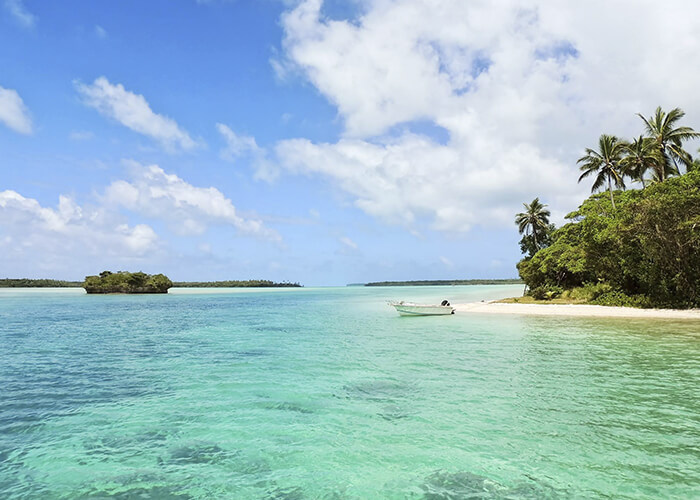

Por: Livan Aguilera
Costa Rica es un país maravilloso que tiene muchas cosas para ofrecer a pesar de su pequeño tamaño. Manuel Antonio es uno de sus joya que tiene que conocer sí o sí. La flora y fauna impresionante que puede descubrir visitando el Parque Nacional, y también una de las playas las más hermosas del mundo. El ambiente único, y las muchas actividades para que todos tengan lo que estaban buscando. Con su familia, en pareja o con amigos, eco-turistas, en busca de aventuras emocionantes o solo para relajar, están en el buen lugar. Déjanos organizar su estancia de sueño y aprovecha de su vacaciones en este paraíso tropical. ¡Pura Vida!
Con el establecimiento del Parque Nacional Manuel Antonio en 1972, la gente de Costa Rica decidió preservar, para las generaciones futuras, una de las áreas más bellas y biodiversas del mundo. A pesar de que es el parque nacional más pequeño del país, la impresionante belleza y diversidad de la vida silvestre en sus 683 hectáreas es inigualable. Manuel Antonio contiene una encantadora combinación de selva tropical, playas y arrecifes de coral. Estas playas son las más bellas del país, rodeadas de frondosos bosques, y el esnórquel también es excelente. El bosque es hogar de osos perezosos, iguanas, los raros y adorables monos ardilla y millones de coloridos cangrejos. Y el sendero que serpentea alrededor de Punta Catedral ofrece algunas vistas espectaculares. El parque es de fácil acceso, al sur de la ciudad de Quepos, y está cerca de una buena selección de hoteles y restaurantes.
Si va a recorrer el Parque Nacional de Manuel Antonio por su cuenta, tenga en cuenta que el camino hacia el Parque Nacional estará lleno de personas que venden sus propios servicios como “guías” y para el estacionamiento o las entradas. Se vestirán como guardabosques o guías oficiales y puede que lleven etiquetas que los identifiquen como personal del parque, pero son impostores sin relación alguna con el parque. Intentarán venderle entradas, visitas y aparcamientos a kilómetros de la entrada a precios excesivos. Por favor, no se deje intimidar por ellos, puede seguir hasta la entrada del parque y aparcar allí por C3000 -C4000 (menos de 6-7 dólares) y comprar sus entradas por internet Aquí (18,08 dólares para adultos y niños a partir de 12 años).